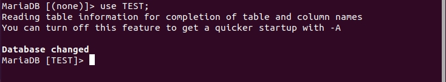
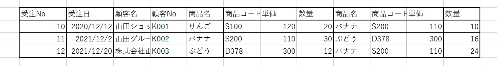
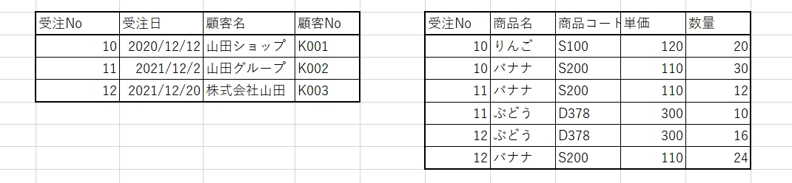
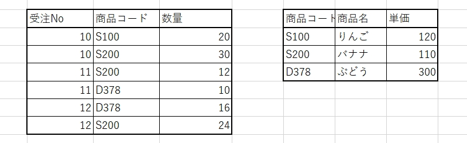
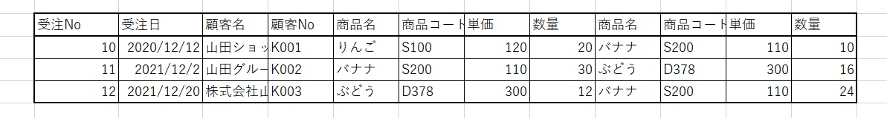
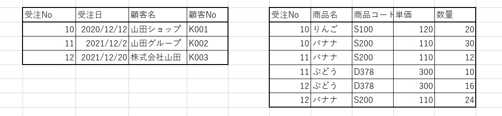
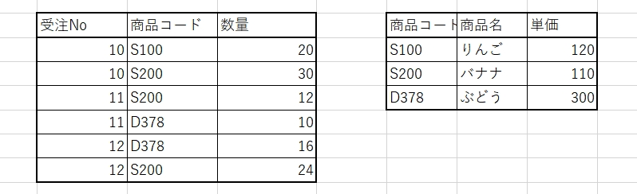

もくじ
第1章 第2章
第3章 第4章
CREATE DATABASEでデータベースを作成する事を意味します。
それぞれの単語はスペースで区切ることで別の言葉だと認識されます。
このSQLを実行すると、指定したデータベース名のデータベースが作成されます。
例えば上記のSQL文を実行することで"testDB"というデータベースが作成されます。
このSQL文を実行すると、作成したデータベースを表示させる事ができます。
SHOW文では指定した情報を表示させることができます。
このSQL文を実行すると、作成したデータベースを削除する事ができます。
指定したデータベースがない場合、綴りを間違えた場合にエラーが起きます。
SQL文が間違っていないか、削除するデータベースがあるかを確認しましょう。
DROP文では指定した情報を削除することができます。
このSQL文を実行すると、Database changed と表示され、左の文字が
Mariadb [データベース名]>
となったら完了です。
TESTという部分は自身で作ったデータベースが表示されていればOKです。
・useコマンドの実行結果
第1章 第2章
- データベース作成
- データベースを表示
- データベース削除
- 使用するデータベースの指定
- テーブルとカラムの作成
- テーブルの削除
- テーブル一覧の表示
- テーブルの名前の変更
- 一時テーブルの作成
- カラムの表示
- カラムの削除
- テーブルの中身を消す
- テーブルにカラムを追加
- プライマリーキーの設定
- プライマリーキーの追加
- カラムに初期値を設定
- カラムのデータ型を変更する
- カラム名とデータ型をまとめて変更する
- 指定したカラムをテーブルの先頭に移動
- 新しいカラムを、指定したカラムの後に追加
- 新しいカラムを、テーブルの最初に追加
- テーブルのカラムにデータを追加
- 指定したカラムのデータを表示する。
- 外部キーの追加・削除
第3章 第4章
- 作成済みユーザーの確認
- ユーザーの作成
- 特権ユーザーの作成
- ユーザーのパスワード変更
- ユーザーの削除
- DBを限定して権限を与える
- 権限の付与
- データベースを指定してログイン
- ユーザ権限の確認
- 文字コードをUTF-8にする
データベース作成
- > CREATE DATABASE データベース名;
それぞれの単語はスペースで区切ることで別の言葉だと認識されます。
このSQLを実行すると、指定したデータベース名のデータベースが作成されます。
- > CREATE DATABASE testDB;
データベースを表示
- >SHOW DATABASES;
SHOW文では指定した情報を表示させることができます。
データベース削除
- > DROP DATABASE データベース名;
指定したデータベースがない場合、綴りを間違えた場合にエラーが起きます。
SQL文が間違っていないか、削除するデータベースがあるかを確認しましょう。
DROP文では指定した情報を削除することができます。
使用するデータベースの指定
- USE データベース名;
Mariadb [データベース名]>
となったら完了です。
TESTという部分は自身で作ったデータベースが表示されていればOKです。
・useコマンドの実行結果

テーブルとカラムの作成
テーブルの削除
テーブル一覧の表示
テーブルの名前の変更
一時テーブルの作成
カラムの表示
カラムの削除
もくじ
 SQL文を入力してデータを抽出してみましょう。
SQL文を入力してデータを抽出してみましょう。
データベースに保存されているデータを使用しやすくするために、ルールに基づいて整理・変形すること。
正規化を行うことで、データの追加・更新・削除に伴う不整合や喪失が起きるのを防ぐことができ、 メンテナンスの効率性を高めていくことができます。
正規化を正しく行っておけば、データベース運用時に発生する問題を未然に防止することができます。
そのため、運営コストを削減するためにも正規化の必要性が謳われているのです。
第1正規化
テーブルの中に複数の値を持つようなデータ項目を含まないという条件を満たすように整理する。
第2正規化
第1正規化後のテーブルに、主キーの一部の項目だけに従属するような項目を含めないように整理する。
第3正規化
第2正規化後のテーブルに、主キー以外の項目に従属するような項目がなくなるように整理する。
・正規化されていないテーブル(表1-1)

商品名が変更になった時に1つ1つデータを直していくのか1社からの複数の注文があった場合、 このテーブルは右に長くなってしまいます。
また、売り上げの合計がデータベース上のデータと実データでは合わないという場合に、 この様なテーブルから間違いを探すのは至難の技です。
・正規化の方法
第1正規化
テーブルの中に複数の値を持つようなデータ項目を含まないという条件を満たすように整理する。
繰り返しの項目が存在する非正規形から、繰り返し部分を取り除いていきます。
非正規形の表の横方向に伸びた繰り返し部分を切り離して、重複をなくしていくのが第１正規化です。
例えば、先ほどの表１のテーブルの商品名から数量までの項目の繰り返しを切り離した形は以下のようになります。
・第1正規化後の表2-1と表2-2
 正規化前の乱雑なテーブルを受注Noと顧客の情報がまとめられた表1と、 各注文で、どの商品がどのような商品がどの程度購入されたのかを示す表2に分けています。
このように第1正規化が完了したテーブルを「第1正規形」と言います。
繰り返し部分が別になっただけでもテーブルが見やすくなり、情報の管理がしやすくなると思います。
しかし、より管理しやすくするために、まだまだテーブルに手を加えていける部分が存在します。
第2正規化
第1正規化後のテーブルに、主キーの一部の項目だけに従属するような項目を含めないように整理する。
データをより管理しやすくするために、第1正規形のテーブルで主キーの一部だけに従属している部分を分離します。この方法を第2正規化といいます。
表2-2を第2正規化し、第２正規形のテーブルにしたものは以下のようになります。
・表3-1と表3-2
 データを特定するために使われるカギとなるデータに付属しているデータの繰り返しを整理します。
第3正規化
第2正規化後のテーブルに、主キー以外の項目に従属するような項目がなくなるように整理する。
第2正規系でデータの冗長性を取り除きましたが、まだ改良の予知があります。
例えば顧客の会社名が変わったとき、表2-1のように顧客Noと顧客名をすべての注文に記入していた場合は、 いちいちすべての会社名を変えていかなければなりません
この顧客名は主キーである受注Noがわからずとも、顧客コードさえわかっていれば特定できる情報です。
そのため表2-1から顧客名を以下のように分離させていきます。
第3正規化まで終えると、このように冗長性が排除され、データの整合性を保ちやすくなり、 管理効率が上がります。
・関数従属性
データ抽出
正規化
正規化とは？データベースに保存されているデータを使用しやすくするために、ルールに基づいて整理・変形すること。
正規化を行うことで、データの追加・更新・削除に伴う不整合や喪失が起きるのを防ぐことができ、 メンテナンスの効率性を高めていくことができます。
正規化を正しく行っておけば、データベース運用時に発生する問題を未然に防止することができます。
そのため、運営コストを削減するためにも正規化の必要性が謳われているのです。
第1正規化
テーブルの中に複数の値を持つようなデータ項目を含まないという条件を満たすように整理する。
第2正規化
第1正規化後のテーブルに、主キーの一部の項目だけに従属するような項目を含めないように整理する。
第3正規化
第2正規化後のテーブルに、主キー以外の項目に従属するような項目がなくなるように整理する。
非正規なデータの状態
正規化されていないテーブルはその中に繰り返しの項目が存在しています。・正規化されていないテーブル(表1-1)

商品名が変更になった時に1つ1つデータを直していくのか1社からの複数の注文があった場合、 このテーブルは右に長くなってしまいます。
また、売り上げの合計がデータベース上のデータと実データでは合わないという場合に、 この様なテーブルから間違いを探すのは至難の技です。
・正規化の方法
第1正規化
テーブルの中に複数の値を持つようなデータ項目を含まないという条件を満たすように整理する。
繰り返しの項目が存在する非正規形から、繰り返し部分を取り除いていきます。
非正規形の表の横方向に伸びた繰り返し部分を切り離して、重複をなくしていくのが第１正規化です。
例えば、先ほどの表１のテーブルの商品名から数量までの項目の繰り返しを切り離した形は以下のようになります。
・第1正規化後の表2-1と表2-2
 正規化前の乱雑なテーブルを受注Noと顧客の情報がまとめられた表1と、 各注文で、どの商品がどのような商品がどの程度購入されたのかを示す表2に分けています。
このように第1正規化が完了したテーブルを「第1正規形」と言います。
繰り返し部分が別になっただけでもテーブルが見やすくなり、情報の管理がしやすくなると思います。
しかし、より管理しやすくするために、まだまだテーブルに手を加えていける部分が存在します。
第2正規化
第1正規化後のテーブルに、主キーの一部の項目だけに従属するような項目を含めないように整理する。
データをより管理しやすくするために、第1正規形のテーブルで主キーの一部だけに従属している部分を分離します。この方法を第2正規化といいます。
表2-2を第2正規化し、第２正規形のテーブルにしたものは以下のようになります。
・表3-1と表3-2
 データを特定するために使われるカギとなるデータに付属しているデータの繰り返しを整理します。
第3正規化
第2正規化後のテーブルに、主キー以外の項目に従属するような項目がなくなるように整理する。
第2正規系でデータの冗長性を取り除きましたが、まだ改良の予知があります。
例えば顧客の会社名が変わったとき、表2-1のように顧客Noと顧客名をすべての注文に記入していた場合は、 いちいちすべての会社名を変えていかなければなりません
この顧客名は主キーである受注Noがわからずとも、顧客コードさえわかっていれば特定できる情報です。
そのため表2-1から顧客名を以下のように分離させていきます。
第3正規化まで終えると、このように冗長性が排除され、データの整合性を保ちやすくなり、 管理効率が上がります。
・関数従属性